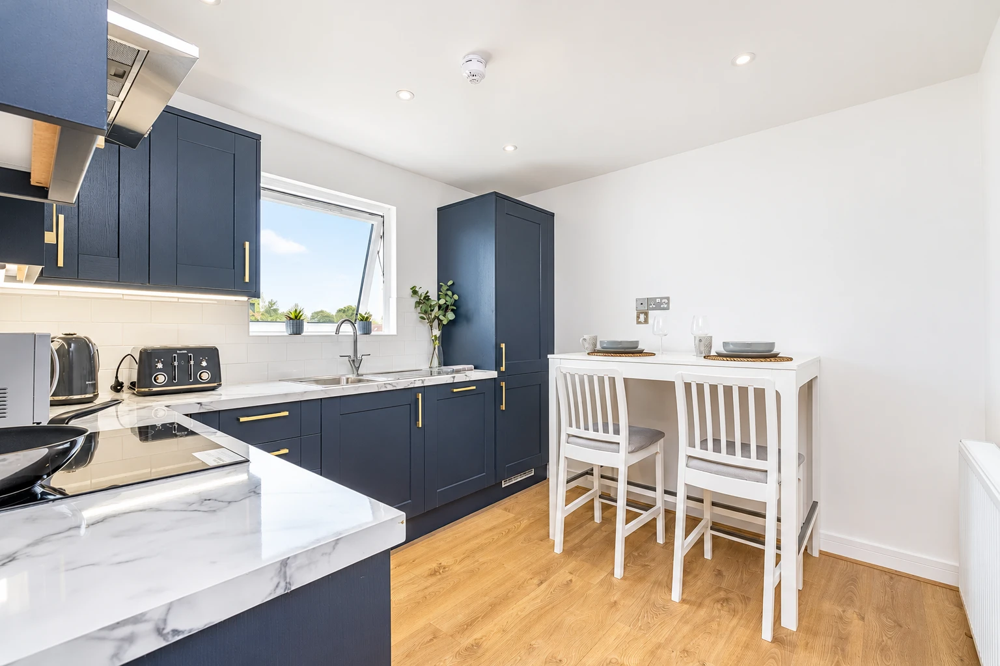
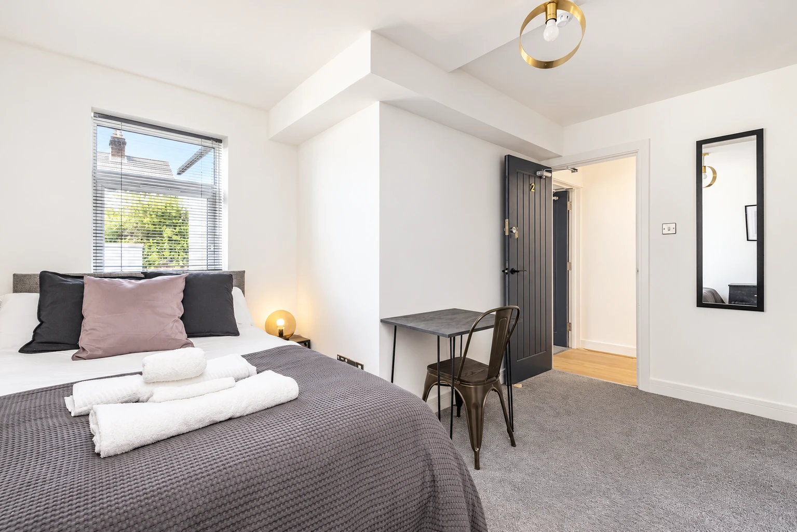
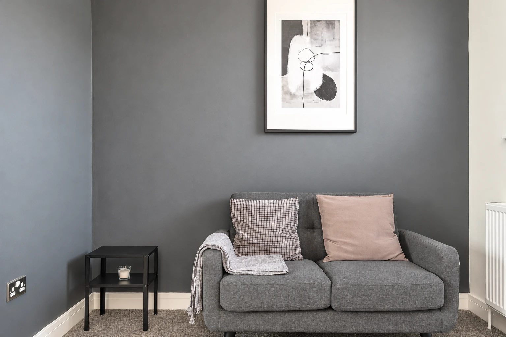
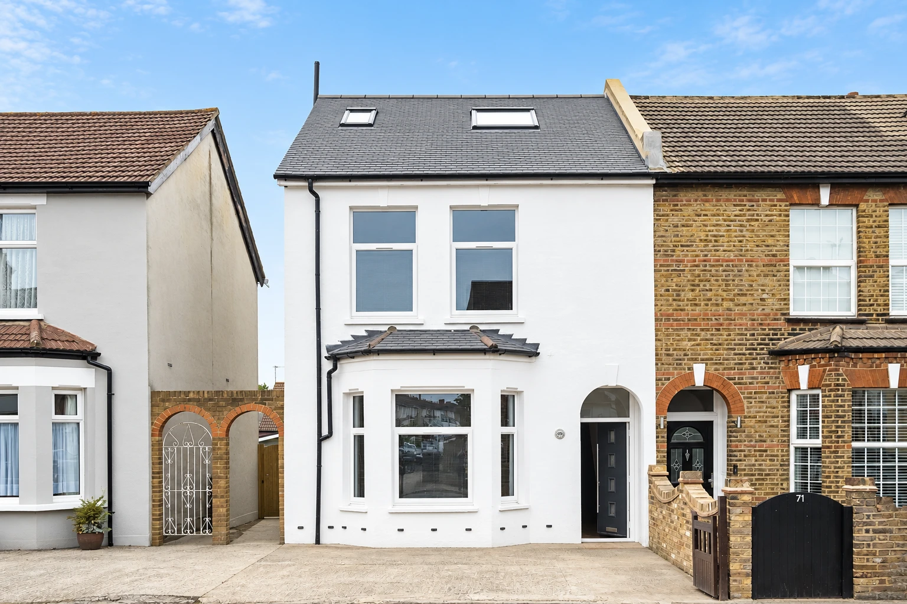
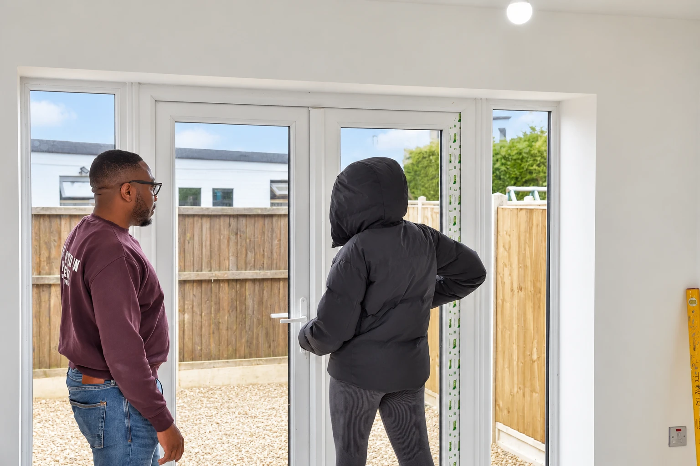

UK PROPERTY ADVISORY · FOR NIGERIANS AT HOME
Live in Nigeria.
Own property that
earns in pounds.
School fees. Family travel. Your long-term future.
Explore a UK property plan that starts with your goals.
Personalised advisory from Property Wealth Corporation.
Starts with a clear plan.↓
Founder & leader
Property Wealth Corporation
01 / THINK IN TWO CURRENCIES
Earn in pounds.
See what that means in naira.
What would ₦2 million
a month mean for you?
At an illustrative ₦2,000 to £1, a property collecting £1,000 in monthly rent generates ₦2 million in gross naira-equivalent income.
Gross rent is before expenses and tax. This is an illustration, not a property offer or a minimum income promise.
EXPLORE THE NAIRA EQUIVALENT
When the pound strengthens against the naira, the equivalent rises. It can also fall. Rates here are illustrative; conversion charges apply.

69 HOMESDALE ROAD · UK PROPERTY PHOTOGRAPH02 / OWN OUTRIGHT
Cash purchase.
No mortgage
repayments.
Buying outright removes mortgage repayments from your rental cash flow. Appointed managers can handle day-to-day letting while you live in Nigeria.
Repairs, vacancies, management fees and taxes still affect what you keep. Management arrangements and PWC's service scope are agreed separately.
Discuss a cash purchase ↗03 / MORE THAN ONE RENTAL STREAM
HMO EXAMPLEOne property.
Several rent-paying rooms.
A house in multiple occupation—an HMO—lets rooms to separate households. More rental streams also bring more responsibilities.
Explore the HMO route ↗The real question: what remains after costs?
Hypothetical, fully occupied example. Not an available property or promised return. Rent depends on the location and asset. Permissions, licensing, safety standards, operating costs and taxes must be assessed.


Portfolio photographs have been digitally retouched for presentation and illustrate the property experience. They are not evidence of the rental figures above or a statement that these properties are currently for sale.
04 / YOUR CAPITAL DESERVES A CLEAR PLAN
Before you buy,
know what you're buying.
Your budget. Your ownership rights. The full costs. Who manages the property. What happens when you want to sell.
Tell us your goalsShare your capital range, timeframe and reason for buying.
Understand the advisory routeWe explain relevant services, responsibilities and fees before engagement.
Assess before committingWithin the agreed scope, coordinate the appropriate property checks and specialist professionals.

129 HOMESDALE ROAD · ON SITE
Ownership rights matter.
England has a legal process and compensation rules for compulsory acquisition. Careful title checks and independent legal advice remain essential.
Read the official guidance ↗A CROSS-BORDER PERSPECTIVE
Meet
Dr Daniel Moses.
Founder and leader of Property Wealth Corporation. Property entrepreneur, educator, mentor and author of Fractional Real Estate.
His work brings together property education, advisory and structured ownership for Nigerians and the African diaspora.
Start with a conversation ↗A FEW QUESTIONS, ANSWERED
Clarity comes first.
How much capital do I need?+
It depends on the property and buying route. Budget for the acquisition, taxes, professional fees and operating reserves. Share a broad capital range so the team can discuss the relevant options.
Can the purchase be handled from Nigeria?+
Parts of the process may be handled remotely. Your solicitor, lender and other providers will confirm identification, signing and transaction requirements.
Are the income figures guaranteed?+
No. The figures on this page are hypothetical gross-income examples. Actual rent, net profit and currency equivalents vary. Property values and income can fall.
What does PWC charge?+
Fees depend on the service and scope. The team will explain applicable fees and engagement terms before you proceed.
YOUR NEXT STEP
Your life is in Nigeria.
Let's discuss your UK property plan.
Tell us your goal, available capital and timeframe.
We will explain the relevant advisory options and fees.
Opens an email enquiry to admin@propertywealthcorp.com.